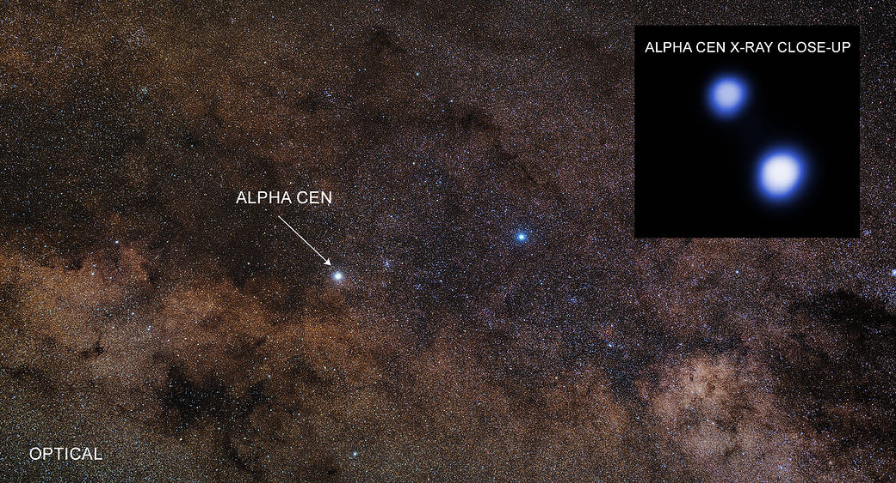

A triple star (or triple star system) is a gravitationally bound system of three stars orbiting their common centre of mass. Triple systems account for roughly one in twelve of all stellar systems, making them the most common arrangement after single stars and binaries.

Optical: Zdenek Bardon; X-ray: NASA/CXC/Univ. of Colorado/T. Ayres et al.
Hierarchical structure
Almost all stable triple systems are hierarchical: a close inner binary is orbited by a more distant third star. For this arrangement to last, the outer orbit must be at least about 7.5 times larger than the inner one. Non-hierarchical configurations, where all three stars have similar separations, are dynamically unstable and quickly eject one member, leaving behind a binary.
Alpha Centauri is a well-known example. The inner pair (A and B) orbits every 79 years at separations of 11–36 AU, while Proxima Centauri circles the pair at roughly 13,000 AU with a period of about 511,000 years. At the other extreme, the compact system TIC 290061484 has an inner binary with a 1.8-day period and a third star orbiting every 25 days, the shortest outer period on record.
How common are triples?
Triple frequency depends strongly on stellar mass. More than half of massive O- and B-type stars belong to triple or higher-order systems, compared with roughly 10–15% of solar-type stars. Among close binaries with periods under three days, the triple fraction exceeds 95%, suggesting the third star plays a role in shrinking the inner orbit over time through a process called the Kozai-Lidov effect. This mechanism causes the inner binary's eccentricity and orbital tilt to oscillate, and when combined with tidal friction it can gradually tighten the pair.
Evolutionary outcomes and planets
Triple-star dynamics can produce outcomes that isolated binaries cannot, including stellar mergers, blue straggler stars, and compact object pairs that may become gravitational wave sources. The inner pair of TIC 290061484, for example, is expected to merge and trigger a supernova in 20–40 million years.
Planets can survive in triple systems. At least 32 are known, most orbiting only the distant third star. The planet KOI-5Ab, roughly half the mass of Saturn, orbits the primary of its triple system every five days with its orbital plane tilted 50° from the inner binary, likely a result of gravitational tugging by the companion stars. Proxima Centauri, the third member of the Alpha Centauri system, hosts at least one confirmed planet of its own.